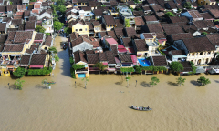
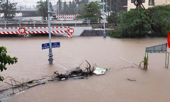

Trang Chủ
Góc Nhìn
Thế Giới
Thời Sự
Góc Nhìn
Nếu con tôi bị bạn đánh
(Thẻ tiêu đề và thẻ images nên tách biệt 2 link khác nhau cho dễ dàng css) Tôi luôn bất an khi tự hỏi 'nếu con mình là nạn nhân bạo lực học đường, mình sẽ làm gì'?
Đấu giá 'bất thường'
Cái chốt của vấn đề là xin được giấy phép khai thác cát, rồi lách qua khe 'quản lý yếu kém' để kiếm lợi lớn.
Sang Tây ăn phở
Phở ở Latvia quy ra lít, tô nhỏ nửa lít, tô lớn một lít; còn ở Mỹ có phở 'xe lửa' (XL), gọi theo cỡ quần áo.
Thế Giới
PCA muốn đưa Việt Nam thành địa điểm xét xử trọng tài
Tòa Trọng tài Thường trực (PCA) muốn đưa Việt Nam trở thành một địa điểm xét xử các sự việc do cơ quan này thụ lý, nhân kỷ niệm khai trương văn phòng tại Hà Nội.
Cuộc sống chung một mái nhà của gia đình gần 200 người
ẤN ĐỘBữa ăn gia đình của nhà Ziona ở Mizoram trông như khung cảnh tại một nhà hàng, với một loạt bàn gỗ và ghế nhựa được kê trong căn phòng lớn.
Lưới phòng không Mỹ nguy cơ chắp vá vì thiếu tên lửa Patriot
Chiến sự Gaza buộc Mỹ điều thêm các tổ hợp Patriot đến Trung Đông, nguy cơ tạo ra lỗ hổng phòng không tại những khu vực quan trọng khác.
Thời Sự
Phố cổ Hội An ngập nửa mét

QUẢNG NAM Nước lũ dâng cao khiến nhiều tuyến phố ven sông Hoài và hàng trăm nhà cổ ở Hội An ngập nửa mét, là mức ngập lớn nhất từ đầu năm.
Ông Hoàng Minh làm Thứ trưởng Bộ Khoa học và Công nghệ
Ông Hoàng Minh, Giám đốc Học viện Khoa học, Công nghệ và Đổi mới sáng tạo, được Thủ tướng bổ nhiệm giữ chức Thứ trưởng Bộ Khoa học và Công nghệ.
Đường sắt bị chia cắt vì mưa lũ

Mưa lớn, nước lũ dâng cao khiến nhiều đoạn đường sắt qua tỉnh Thừa Thiên Huế bị ngập sâu , 6 đoàn tàu khách đang phải dừng chờ ở các ga dọc tuyến.